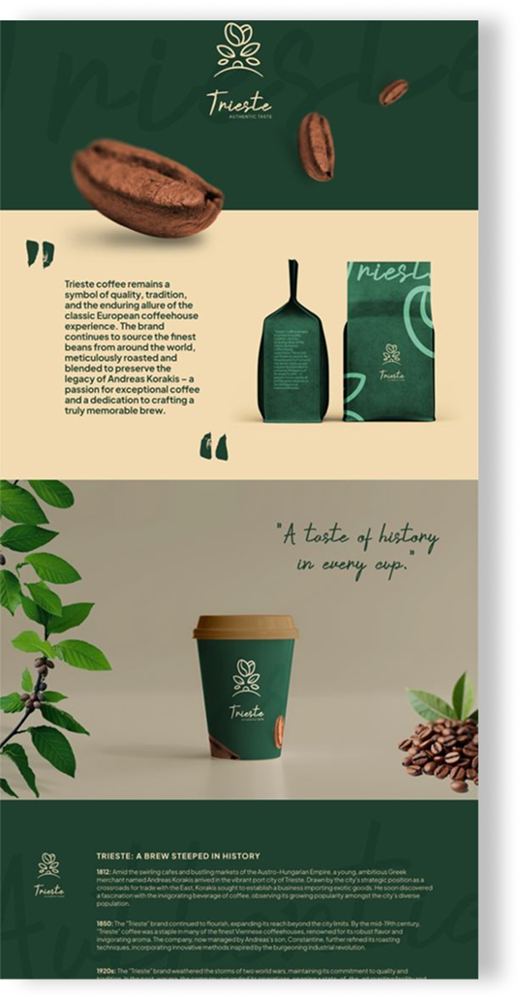

Selected work
A collection of projects, experiments and
things I’ve built along the way.

Self-initiated project
NERO - Specialty Coffee
Website redesign for an
independent coffee roastery.
Goal: Create a more distinctive and intuitive online experience for discovering and purchasing specialty coffee.
Role: UI/UX Design · Web Design
Self-initiated project
NERO - Specialty Coffee
Website redesign for an
independent coffee roastery.
Goal: Create a more distinctive and intuitive online experience for discovering and purchasing specialty coffee.
Role: UI/UX Design · Web Design